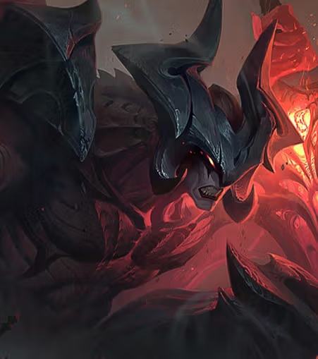

Aatrox, la Espada de los Oscuros
Antaño defensores honorables de Shurima contra el Vacío, Aatrox y sus hermanos acabarían convirtiéndose en una amenaza aún mayor para Runaterra. Derrotado solo mediante astutas hechicerías mortales, su esencia fue sellada dentro de su propia espada. Ahora, siglos después, Aatrox ha vuelto, corrompiendo y transformando a aquellos que intentan empuñar su arma.
Con un cuerpo robado y una furia imparable, camina por el mundo buscando el fin de toda existencia, esperando que la aniquilación total le conceda la libertad que tanto ansía.